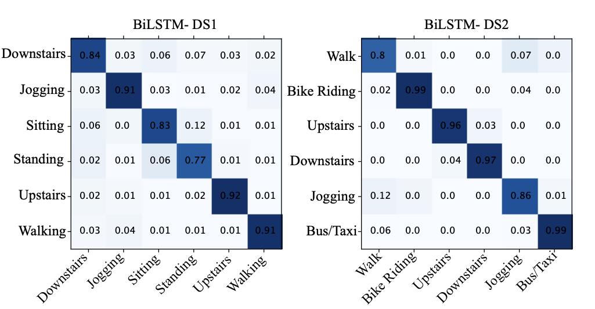

Medical AI
Thesis
Paper
Thesis
Problem
Predicting Binding Affinities
Between Natural Components and K-Ras

Pancreatic Cancer
Pancreatic ductal adenocarcinoma (PDAC)

Transformer Encoder
12 attention heads and 6 layers, resulting in 72 distinct attention mechanisms
Pretrained on a subset of PubChem and ZINC + MLM
Dataset of natural compound SMILES and their affinities for K-Ras G12C
Pretrained model competing SOTA + Fine Tuning
Introducing a new ranking-based metric for evaluating models that is more intuitively related to this problem than MSE
Achieving SOTA with MSE while outperforming SOTA on the new ranking-based metric

Paper
Investigating Feature Extraction Designs for Human Activity Recognition
Monitoring patients post-surgery
Data
Time series data: Gyroscope & Accelerometer
Task: Predicting Activity such as standing, sitting, ...
Contributions
Examining different feature extractors
From traditional machine learning methods to shared weights in architectures like RNNs and transformers
Different loss funcitons such as CE, triplet and contrastive
